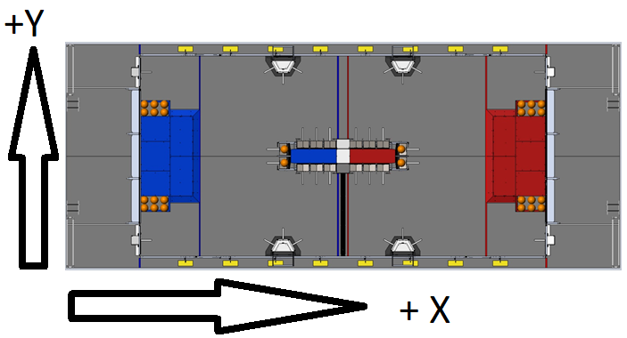

Coordinates
Anytime we are dealing with the location of the robot, there is a coordinate system used
as a reference. The XeroPathGenerator uses and X/Y coordinate system with the origin at
the lower left-hand corner of the field. The X axis increases left to right along the
long edge of the field, and the Y axis increases top to bottom along the short edge of
the field. The heading is measured in degrees. Zero degrees heading is looking in the
direction of the positive X axis. Ninety degrees heading is looking in the direction
of the Y axis.

Getting Started